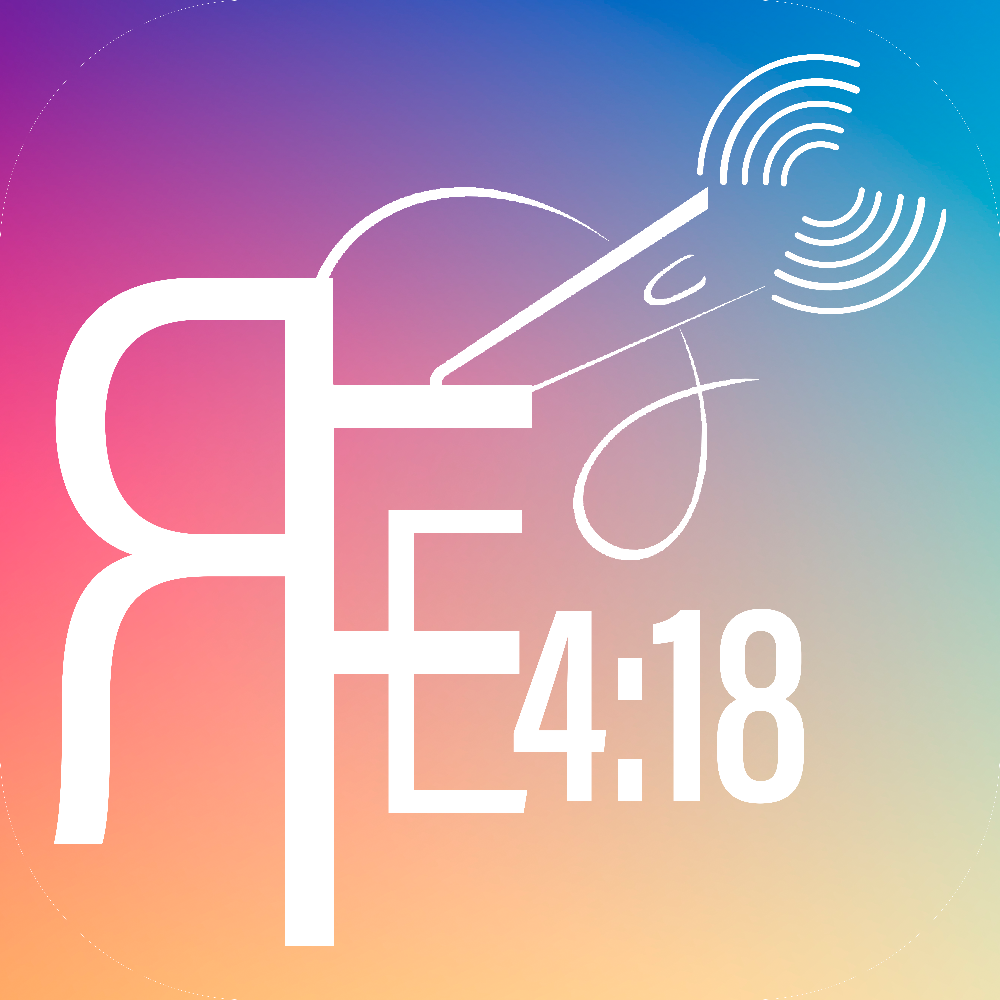

Al Aire 0

Radio FE 4:18
Sonando por todo lo alto
Nuestra Misión y Señal
Bienvenidos a Radio FE 4:18, una estación de radio cristiana que transmite de forma digital desde Barinas, Venezuela. Nuestro compromiso es ser un faro de luz en internet, consolidándonos como una plataforma integral que impulsa y apoya con orgullo el talento cristiano venezolano a nivel global.
Ofrecemos una programación variada diseñada para edificar tu vida las 24 horas del día. En nuestra señal sonamos todo tipo de género musical cristiano, desde las alabanzas contemporáneas más profundas hasta los ritmos urbanos y tradicionales más enérgicos del momento.
Más allá de la música, acompañamos tus jornadas con poderosas reflexiones bíblicas de impacto, espacios comunitarios y tips de concientización para fortalecer los valores de la familia y el crecimiento personal. Sintoniza una señal optimizada en alta fidelidad y llena tu espacio de paz, fe y bendición.
Contrata con nosotros y multiplica tus ventas o estrena tu programa radial en nuestra señal.
Contamos con bloques publicitarios de alto impacto para empresas y espacios exclusivos en parrilla para proyectos independientes o ministeriales. ¡Asegura tu lugar hoy mismo!
Top 5 Musical | AGOSTO 2026
Nuestra señal no termina aquí, ¡conéctate!
Acompáñanos diariamente en nuestras plataformas digitales para edificar tu vida.
SHORTS RECOMENDADOS
Nuestros Aliados
Ellos confianPan de Vida
RVR1960
Parrilla | Programación
Recién Sonadas | Historial
4 ÚltimasPlan de Oración 6 - 3 - 9
1 TESALONICENSES 5:17Oramos por:
Pastores y Líderes
Oramos por:
Nuestra Nación, Venezuela
Oramos por:
Las Familias
Comunícate con nosotros
Tu voz edifica nuestra señal
¿Quieres enviar un saludo especial, solicitar una alabanza o compartir una petición de oración? Escríbenos ahora mismo; nuestro equipo ministerial está listo para leerte y bendecir tu vida.
Notas & Entérate
Últimas NoticiasÚltimas Notas Contexto Media Group|
Equipo Directiva
Dios la direccion perfectaCanal de YouTube | @EliaquinMarin
OficialÚnete a nuestra comunidad y edifica tu vida con cada video. ¡Tu apoyo hace la diferencia!
Dale Me Gusta
Apoya el contenido
Comenta
Queremos leerte
Comparte
Llega a más personas
Canal Oficial de Radio FE 4:18
Sintonice nuestra visión: un espacio diseñado para compartir nuestra programación diaria, reflexiones espirituales y devocionales edificantes. Al ser un canal estrictamente informativo, garantizamos una experiencia silenciosa, organizada y enteramente libre de spam.
Instala Radio FE 4:18
Canales de Atención | Contacto Directo
24/7Sede Central
Barinas, Edo. Barinas — Venezuela
Canal Escrito
eliaquinmarin@gmail.comLínea Máster
+58 (422) 518-3677Eliaquin Marín
Director de Radio FE 4:18
¿Tienes alguna consulta, petición de oración o sugerencia para la emisora? ¡Escríbeme directamente!